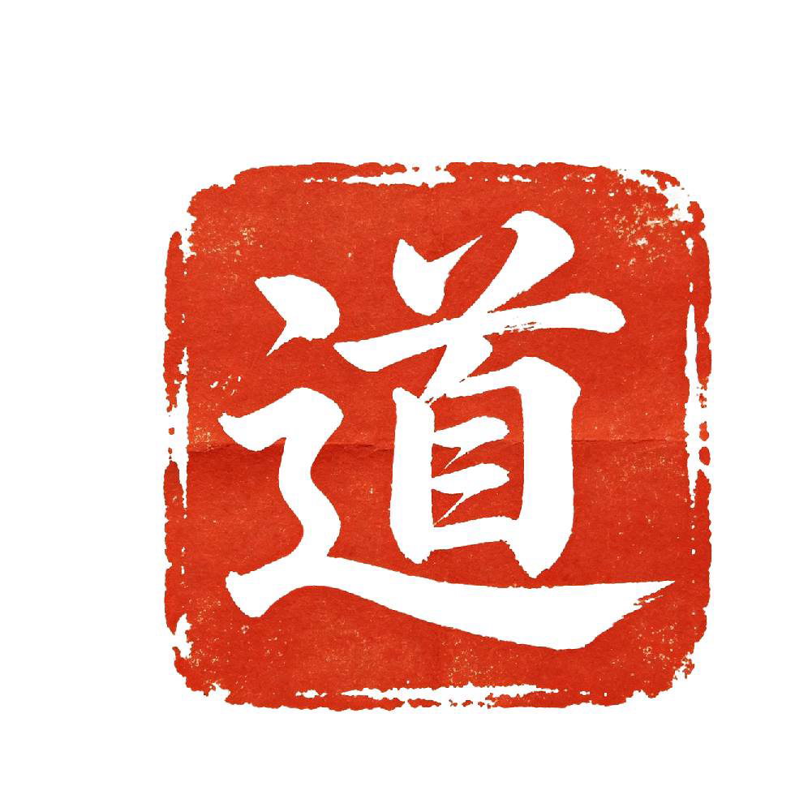

A premium reading should feel thoughtful and human, not machine-generated. This version is written for overseas clients in clear English while preserving the symbolic language that gives BaZi and Feng Shui their depth.
The chart points to a person with strong Water and Metal qualities: perceptive, strategic, and mentally quick. The challenge is not insight. The challenge is how to make insight visible, practical, and steady in the outside world.
Your Day Master is Ren Water. This is a chart that understands flow, nuance, and timing. It performs best when paired with stronger Fire for presence and stronger Earth for structure.
| Year Pillar | Month Pillar | Day Pillar | Hour Pillar |
|---|---|---|---|
| Geng Wu / Metal Horse | Xin Si / Metal Snake | Ren Chen / Water Dragon | Gui Mao / Water Rabbit |
The chart shows a mind-led nature with strong interpretive ability. Water gives sensitivity and adaptability. Metal gives discernment and edge. The weaker Fire and Earth suggest a need for warmth, momentum, consistency, and containment.
The reading identifies what the chart most needs and what symbolic form carries that direction best. This is where the analysis becomes practical and personal.
Recommended focus: Career and Allies
Suggested carrier: Bracelet for regular daily wear
Primary material direction: tiger eye, citrine, amber-toned stone, warm jade, or another Fire-and-Earth balancing mix
Optional symbolic accent: a subtle authority or advancement accent if the client prefers stronger symbolic meaning
Reading rationale: the chart already contains enough sensitivity and internal movement. The jewelry should support confidence, practical momentum, and stronger social presence.
The product direction in this report is one outcome of the reading — not the purpose of it. The reading stands on its own as a full analysis of the chart. The recommended form is what the symbols most naturally suggest for this particular person.
The chart suggests selectiveness in trust and depth in attachment. This person is not naturally casual with emotional investment. The best matches tend to bring warmth, steadiness, and patience rather than chaos or volatility.
Partners or collaborators with steady Earth or warm Fire qualities often help this chart feel safer, clearer, and more embodied.
Highly erratic or emotionally dramatic personalities can overload the chart's sensitivity and increase indecision or withdrawal.
The healthiest bond combines mental respect with emotional steadiness. The client needs room to think, but also benefits from grounded companionship.
Warmth plus reliability is more favorable here than intensity alone. Calm strength tends to work better than dramatic chemistry.
A premium report should offer usable timing guidance. Below is a sample structure that feels clear to English-speaking clients while still preserving the ritual value of the reading.
The Year of the Fire Horse emphasizes visibility, movement, and stronger external momentum. This can be beneficial for a chart that already has insight but needs more expression.
Premium clients can send one focused follow-up question after receiving the report. This supports the feeling of real human guidance rather than a one-time static file.